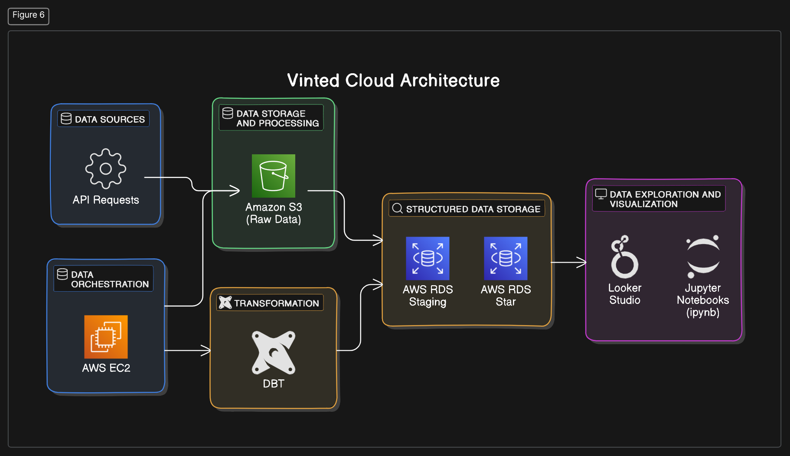

01: Overview of the Vinted Project#
Our data pipeline wants to capture:
the stream of new items being added to Vinted’s marketplace in real time
a system to track these items over time
a system to store and label images from products
The purpose of this project is to create an underlying structure to allow ad hoc analysis. Some of the most important analysis are:
Get product statistics with aggregations: the ability to provide the user an idea of average price by product categories, different sizes, different item conditioning, etc.
Get a sense of existing and future trends: this requires a longitudinal approach where we not only collect the data at a certain point in time, but we continuously track this data with snapshots accross time.
Get product sales factors: this goes with the idea above, which is the ability to track products and detect when they were sold.
Build Dashboards: Dashboards are built on Cubes or other OLAP solutions for aggregated queries.
Build ML solutions: the idea which comes to mind is the ability to predict product trends or price regression.
Overview of Pipeline Design#
 |
|---|
Pipeline Schema (proposed) |
Layers#
This pipeline is divided into 3 main stages:
Layer |
Description |
Details |
|---|---|---|
Raw |
The raw layer is the first ETL layer where we scrape raw data from the source and store it in S3 buckets. This first layer should be the simplest, with minimal to no transformations to the raw data. Data is scraped in JSON format and stored in JSON. |
- Source: Raw data |
Staging |
The staging layer is the first normalization step where we build staging tables in our RDS and store the data in a structured format for the first time. In a later phase, the data is normalized into a normalized layer. This is where data modeling and data normalization occur. |
- Source: Staging tables |
Serving |
The serving layer is the final step of data transformation. It is where data is aggregated, joined, and partitioned according to its semantics and served in an analytics layer. This can be another schema within our RDS (data mart). |
- Source: Aggregated data |
Frameworks#
This is the initial pipeline schema and it was proposed for its simplicity and to leverage popular frameworks. The main technologies chosen for the project are:
Category |
Tools |
|---|---|
Data Orchestration |
Prefect |
Data Transformation |
Pandas |
Distributed Computing |
Spark |
Machine Learning |
Scikit-learn |
Visualization |
Plotly |
WSGI Server |
Streamlit |
Cloud infrastructure#
Category |
Tools |
|---|---|
Object Storage |
S3 object storage |
Relational Database |
AWS RDS Postgres (DBaaS) |
Computing infrastructure |
AWS EC2 (IaaS) |